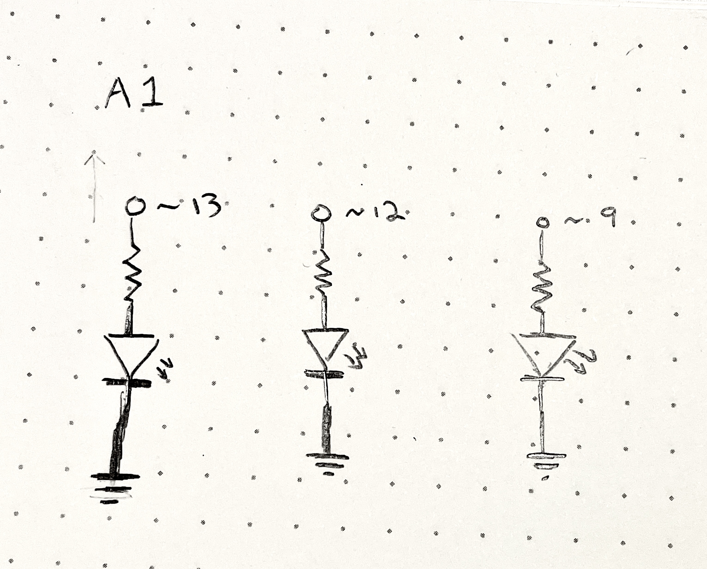
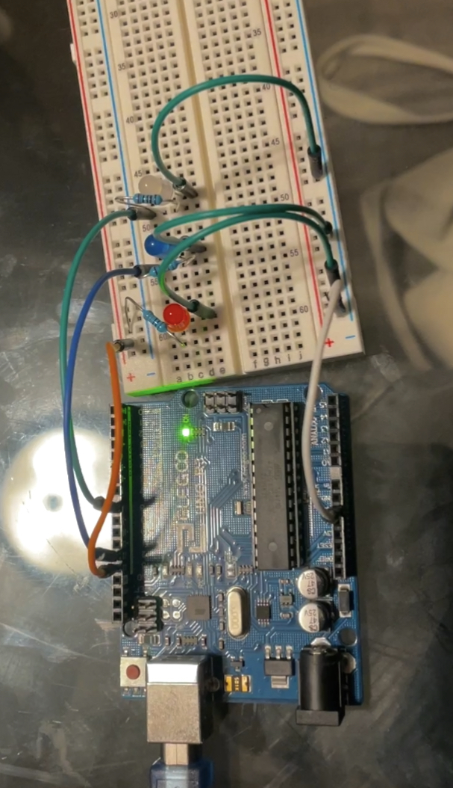

Assignment 1: Blink!
This page shows the required documentation for assignment 1, including:
- firmware
- schematics
- calculations
- circuit
- circuit operation

The gif above shows the circuit's operation. Each LED is meant to turn on for two seconds, then off for two seconds, in the following order: red led, blue led, white led.
Firmware:
/*
Blink
Turns an LED on for two seconds, then off for one second, repeatedly.
*/
// the setup function runs once when you press reset or power the board
void setup() {
// initialize pin 13 as an output
pinMode(13, OUTPUT);
// initialize pin 12 as an output
pinMode(12, OUTPUT);
// initialize pin 8 as an output
pinMode(8, OUTPUT);
}
// the loop function runs over and over again forever
void loop() {
// turn the red LED on (HIGH is the voltage level)
digitalWrite(13, HIGH);
// wait for 2 seconds
delay(2000);
// turn the red LED off by making the voltage LOW
digitalWrite(13, LOW);
// wait for a second
delay(1000);
// turn the blue LED on by making the voltage HIGH
digitalWrite(12, HIGH);
// wait for 2 seconds
delay(2000);
// turn the blue LED off by making the voltage LOW
digitalWrite(12, LOW);
// wait for 1 second
delay(1000);
// turn the white LED om by making the voltage HIGH
digitalWrite(18, HIGH);
// wait for 2 seconds
delay(2000);
// turn the white LED off by making the voltage LOW
digitalWrite(8, LOW);
// wait for 1 second
delay(1000);
}
Schematic:

Circuit:
